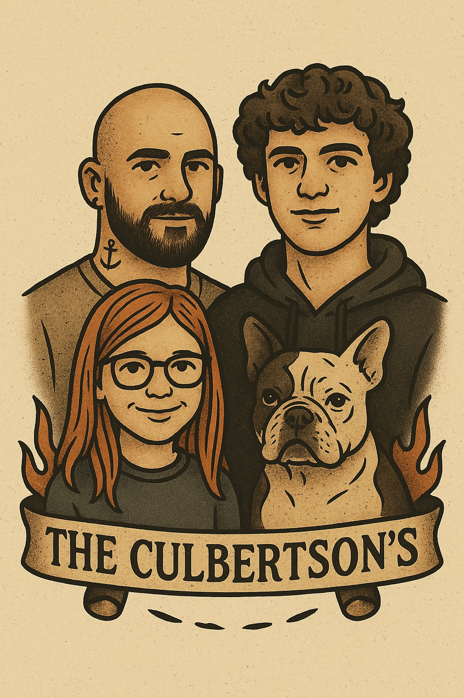

About Me
My name’s Matt Culbertson. I’m a single dad, a creative, a builder, and someone who’s lived a lot of life in a short amount of time. I grew up in the mountains of southwest Virginia — raised on old-school church, southern grit, and just enough trouble to keep things interesting.
I’ve always been hands-on. Whether it was fixing computers, drawing designs, leading teams, or diving into deep conversations, I’ve never been the type to stay on the sidelines. I’m at my best when I’m building something with purpose — whether that’s a message, a moment, or a movement.
MTN.fire was born out of a calling, yeah — but it’s also a reflection of who I am. I’m not here to play it safe. I’m here to create something that sparks, moves, and sets people free. I believe in truth, transparency, and fire that doesn’t burn you down — it burns you clean.
If you’re looking for polish and pretense, you’re probably in the wrong place. But if you want to be challenged, encouraged, and maybe even changed — welcome to the mountain.